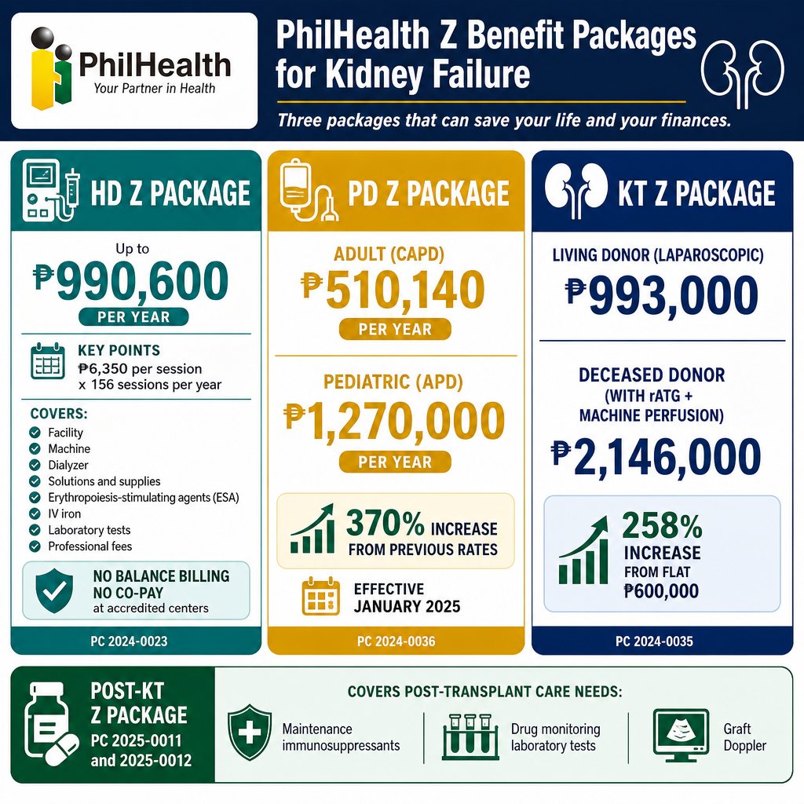
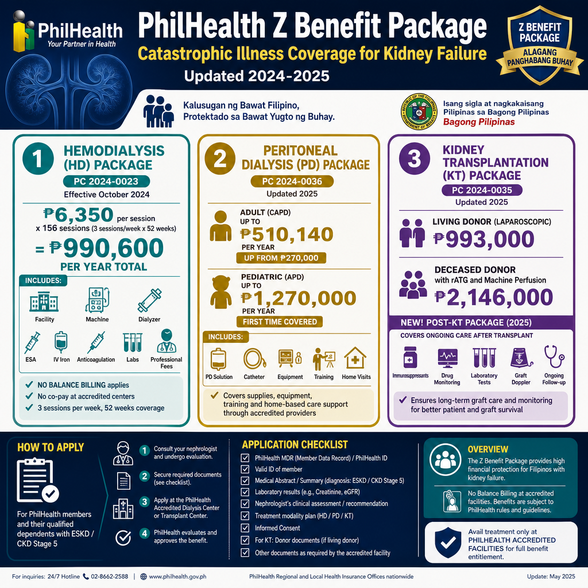
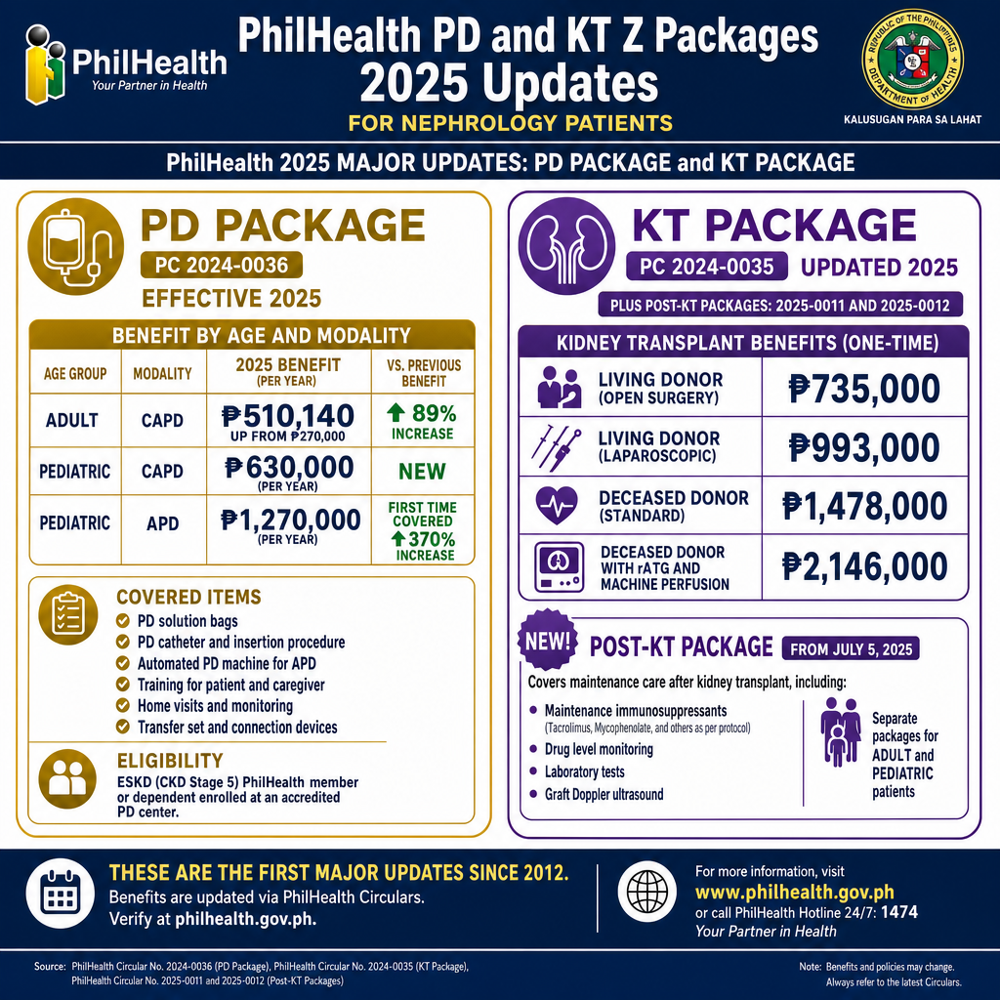

What Is the PhilHealth Z Benefit Package?Ano ang PhilHealth Z Benefit Package?Unsa ang PhilHealth Z Benefit Package?Ano ing PhilHealth Z Benefit Package?
The PhilHealth Z Benefit Package covers catastrophic illnesses — conditions that are life-threatening and financially devastating without government support. Kidney failure (CKD Stage 5 / ESKD) qualifies under two Z packages: the Peritoneal Dialysis (PD) Z Package and the Kidney Transplantation (KT) Z Package. Both are separate from — and supplemental to — regular PhilHealth inpatient and outpatient benefits. Both received their first major update since 2012 effective January 1, 2025.Ang PhilHealth Z Benefit Package ay sumasaklaw sa mga mapaminsalang sakit — mga kondisyon na nagbabanta sa buhay at nakapipinsala sa pananalapi nang wala ang suporta ng gobyerno. Ang kabiguan ng bato (CKD Stage 5 / ESKD) ay kwalipikado sa ilalim ng dalawang Z package: ang Peritoneal Dialysis (PD) Z Package at ang Kidney Transplantation (KT) Z Package. Parehong hiwalay mula sa — at karagdagan sa — regular na mga benepisyo ng PhilHealth para sa inpatient at outpatient. Parehong nakatanggap ng kanilang unang malaking update mula 2012 epektibong Enero 1, 2025.Ang PhilHealth Z Benefit Package nagsakop sa mga mapaminsalang sakit — mga kondisyon nga nagpadaot sa kinabuhi ug nakadaot sa pananalapi nga wala ang suporta sa gobyerno. Ang pagkabigo sa kidney (CKD Stage 5 / ESKD) kwalipikado sa ilalim sa duha nga Z package: ang Peritoneal Dialysis (PD) Z Package ug ang Kidney Transplantation (KT) Z Package. Pareho nga lahi gikan sa — ug dugang sa — regular nga mga benepisyo sa PhilHealth alang sa inpatient ug outpatient. Pareho nakadawat sa ilang unang dakong update sukad 2012 epektibo Enero 1, 2025.Ing PhilHealth Z Benefit Package ya sumasaklaw sa deng mapaminsalaning sakit — deng kondisyon na nagbabanta sa biye at nakapipinsala sa pananalapi nang ala ing suporta ning gobyerno. Ing kabiguan nining batu (CKD Stage 5 / ESKD) ya kwalipikado sa ilalim ning dalawang Z package: ing Perinineal Dialysis (PD) Z Package at ing Kidney Transplantation (KT) Z Package. Parehong hialay mula sa — at karagdagan sa — regular na deng benepisyo ning PhilHealth para king inpatient at outpatient. Parehong nakatanggap ning kanilang unang malda a update mula 2012 epektibong Enero 1, 2025.
2025 PD update (PC 2024-0036)2025 na update sa PD (PC 2024-0036)2025 nga update sa PD (PC 2024-0036)2025 na update sa PD (PC 2024-0036)
PD benefits now vary by age group and modality. Adult CAPD increased from ₱270,000 to up to ₱510,140/year. Pediatric APD now covered for the first time at up to ₱1,270,000/year — a 370% increase.Ang mga benepisyo ng PD ay nag-iiba-iba na ayon sa grupo ng edad at modalidad. Ang Adult CAPD ay tumaas mula ₱270,000 hanggang ₱510,140/taon. Ang Pediatric APD ay nasaklaw na ngayon sa unang pagkakataon sa hanggang ₱1,270,000/taon — isang 370% na pagtaas.Ang mga benepisyo sa PD nagkalain-lain na karon sumala sa grupo sa edad ug modalidad. Ang Adult CAPD misaka gikan sa ₱270,000 hangtud ₱510,140/tuig. Ang Pediatric APD nasakupan na karon sa unang higayon hangtud ₱1,270,000/tuig — usa ka 370% nga pagtaas.Deng benepisyo ning PD ya nag-iiba-iba na ayon sa grupo ning edad at modalidad. Ing Adult CAPD ya tumaas mula ₱270,000 anggang ₱510,140/banua. Ing Pediatric APD ya nasaklaw na ngayon sa unang pagkakabanua sa anggang ₱1,270,000/banua — metung a 370% na pagtaas.
2025 KT update (PC 2024-0035)2025 na update sa KT (PC 2024-0035)2025 nga update sa KT (PC 2024-0035)2025 na update sa KT (PC 2024-0035)
KT benefits now differentiated by donor type and technique. Living donor laparoscopic: ₱993,000. Deceased donor with rATG + machine perfusion: ₱2,146,000. Up from a flat ₱600,000 — a 258% increase for the best-covered category.Ang mga benepisyo ng KT ay iniiba-iba na ayon sa uri ng donor at teknik. Living donor laparoscopic: ₱993,000. Deceased donor na may rATG + machine perfusion: ₱2,146,000. Mula sa flat na ₱600,000 — isang 258% na pagtaas para sa pinaka-sinasaklaw na kategorya.Ang mga benepisyo sa KT gipalahi na karon sumala sa tipo sa donor ug teknik. Living donor laparoscopic: ₱993,000. Deceased donor nga adunay rATG + machine perfusion: ₱2,146,000. Gikan sa flat nga ₱600,000 — usa ka 258% nga pagtaas alang sa labing nasakupan nga kategorya.Deng benepisyo ning KT ya iniiba-iba na ayon sa uri ning donor at teknik. Living donor laparoscopic: ₱993,000. Deceased donor na may rATG + machine perfusion: ₱2,146,000. Mula sa flat na ₱600,000 — metung a 258% na pagtaas para king pinaka-sinasaklaw na kategorya.
HD update (PC 2024-0023, Oct 2024)Update sa HD (PC 2024-0023, Okt 2024)Update sa HD (PC 2024-0023, Okt 2024)Update sa HD (PC 2024-0023, Okt 2024)
HD session rate raised to ₱6,350/session covering 156 sessions/year — total annual package of ₱990,600. Includes facility, machine, dialyzer, solutions, dialysis kit, anticoagulation, anemia drugs (ESA + IV iron), labs, and professional fees. No Balance Billing policy applies — no co-pay at accredited centers.Ang rate ng HD session ay itinataas sa ₱6,350/session na sumasaklaw sa 156 sessions/taon — kabuuang taunang pakete ng ₱990,600. Kasama ang pasilidad, makina, dialyzer, solusyon, dialysis kit, anticoagulation, mga gamot para sa anemia (ESA + IV iron), mga lab, at professional fees. Naaangkop ang patakaran ng No Balance Billing — walang co-pay sa mga accredited center.Ang rate sa HD session gipataas ngadto sa ₱6,350/session nga nagsakop sa 156 sessions/tuig — kinatibuk-ang taunang pakete nga ₱990,600. Naglakip sa pasilidad, makina, dialyzer, solusyon, dialysis kit, anticoagulation, mga tambal alang sa anemia (ESA + IV iron), mga lab, ug professional fees. Nag-apply ang patakaran sa No Balance Billing — walay co-pay sa mga accredited center.Ing rate ning HD session ya itinataas sa ₱6,350/session na sumasaklaw sa 156 sessions/banua — kabuuang taunang pakete ning ₱990,600. Kasama ing pasilidad, makina, dialyzer, solusyon, dialysis kit, anticoagulation, dening gamut para king anemia (ESA + IV iron), deng lab, at professional fees. Naaangkop ing patakaran ning No Balance Billing — alang co-pay sa deng accredited center.
New Post-KT Package — July 5, 2025Bagong Post-KT Package — Hulyo 5, 2025Bag-ong Post-KT Package — Hulyo 5, 2025Bagong Post-KT Package — Hulyo 5, 2025
PC 2025-0011 (pediatric) and 2025-0012 (adult) now cover maintenance immunosuppressants, drug level monitoring, labs, and graft Doppler — addressing the lifelong medication gap that previously deterred many patients from pursuing transplantation.Ang PC 2025-0011 (pediatric) at 2025-0012 (adult) ay sumasaklaw na ngayon sa maintenance immunosuppressants, drug level monitoring, mga lab, at graft Doppler — tinutugunan ang panghabambuhay na kakulangan ng gamot na dati ay pumipigil sa maraming pasyente mula sa paghahanap ng transplantasyon.Ang PC 2025-0011 (pediatric) ug 2025-0012 (adult) nagsakop na karon sa maintenance immunosuppressants, drug level monitoring, mga lab, ug graft Doppler — nagtubag sa pangbuhing kakulangan sa tambal nga kaniadto nagpugong sa daghang mga pasyente gikan sa pagpadayon sa transplantasyon.Ing PC 2025-0011 (pediatric) at 2025-0012 (adult) ya sumasaklaw na ngayon sa maintenance immunosuppressants, drug level moniniring, deng lab, at graft Doppler — tinutugunan ing panghabambiye na kakulangan nining gamut na dati ya pumipigil sa dacal a pasyente mula sa paghahanap ning transplantasyon.
Always verify with PhilHealth directlyLaging i-verify nang direkta sa PhilHealthKanunay i-verify direkta sa PhilHealthPirming i-verify nang direkta sa PhilHealth
Benefits are updated via PhilHealth Circulars. Confirm current rates at philhealth.gov.ph or call 24/7: (02) 866-225-88 · 0998-857-2957 · 0968-865-4670 · 0917-127-5987.Ang mga benepisyo ay ina-update sa pamamagitan ng mga PhilHealth Circular. Kumpirmahin ang mga kasalukuyang rate sa philhealth.gov.ph o tumawag 24/7: (02) 866-225-88 · 0998-857-2957 · 0968-865-4670 · 0917-127-5987.Ang mga benepisyo gi-update pinaagi sa mga PhilHealth Circular. Kumpirma ang mga kasamtangang rate sa philhealth.gov.ph o tawagan 24/7: (02) 866-225-88 · 0998-857-2957 · 0968-865-4670 · 0917-127-5987.Deng benepisyo ya ina-update sa pamamagitan ning deng PhilHealth Circular. Kumpirmahin deng kasalukuyang rate sa philhealth.gov.ph o tumawag 24/7: (02) 866-225-88 · 0998-857-2957 · 0968-865-4670 · 0917-127-5987.

An overview of PhilHealth's three Z Benefit Packages for kidney patients — hemodialysis, peritoneal dialysis, and kidney transplant — showing the yearly financial coverage each one provides.
Hemodialysis Benefits PackagePakete ng Benepisyo sa HemodialysisPakete sa Benepisyo sa HemodialysisPakete ning Benepisyo sa Hemodialysis Updated Oct 2024
₱6,350/session × 156 sessions = ₱990,600/year — effective October 7, 2024₱6,350/session × 156 sessions = ₱990,600/taon — epektibo Oktubre 7, 2024₱6,350/session × 156 sessions = ₱990,600/tuig — epektibo Oktubre 7, 2024₱6,350/session × 156 sessions = ₱990,600/banua — epektibo Oktubre 7, 2024
PC 2024-0023 (Revision 2) raised the HD session rate from ₱4,000 (July 2024) to ₱6,350 and institutionalized 156 sessions per year — matching the clinical standard of 3 sessions/week for 52 weeks. Total annual financial protection: ₱990,600. The No Balance Billing (NBB) policy applies — PhilHealth-accredited centers cannot charge co-payments for any service included in the package.Ang PC 2024-0023 (Revision 2) ay nagtaas ng rate ng HD session mula ₱4,000 (Hulyo 2024) hanggang ₱6,350 at nag-institusyonalisa ng 156 sessions bawat taon — katugma sa clinical na pamantayan ng 3 sessions/linggo para sa 52 linggo. Kabuuang taunang proteksyong pinansyal: ₱990,600. Naaangkop ang patakaran ng No Balance Billing (NBB) — ang mga PhilHealth-accredited center ay hindi maaaring maningil ng co-payment para sa anumang serbisyong kasama sa pakete.Ang PC 2024-0023 (Revision 2) nagpataas sa rate sa HD session gikan sa ₱4,000 (Hulyo 2024) ngadto sa ₱6,350 ug nag-institusyonalisa sa 156 sessions matag tuig — katugma sa clinical nga pamantayan sa 3 sessions/semana alang sa 52 semana. Kinatibuk-ang taunang proteksyon sa pananalapi: ₱990,600. Nag-apply ang patakaran sa No Balance Billing (NBB) — ang mga PhilHealth-accredited center dili makasining ug co-payment alang sa bisan unsang serbisyo nga nasakop sa pakete.Ing PC 2024-0023 (Revision 2) ya nagtaas ning rate ning HD session mula ₱4,000 (Hulyo 2024) anggang ₱6,350 at nag-institusyonalisa ning 156 sessions bawat banua — katugma sa clinical na pamantayan ning 3 sessions/lutu para king 52 lutu. Kabuuang taunang proteksyong pinansyal: ₱990,600. Naaangkop ing patakaran ning No Balance Billing (NBB) — deng PhilHealth-accredited center ya ali maaaring maningil ning co-payment para king anumang serbisyong kasama sa pakete.

A breakdown of PhilHealth's hemodialysis package, covering ₱6,350 per session for up to 156 sessions a year, and listing what is included — facility, machine, dialyzer, medicines, lab tests, and doctor's fees — under the No Balance Billing policy.
HD Benefits Package — What Is Covered (PC 2024-0023)
How to Access the HD PackagePaano Ma-access ang HD PackageUnsaon Pag-access sa HD PackagePaano Ma-access ing HD Package
- Patient must be diagnosed with CKD Stage 5 (ESKD) and registered in the PhilHealth Dialysis Database (PDD) — your dialysis center handles this registrationAng pasyente ay dapat na-diagnose na may CKD Stage 5 (ESKD) at nairehistro sa PhilHealth Dialysis Database (PDD) — ang inyong dialysis center ang humahawak ng rehistrasyon na itoAng pasyente kinahanglan diagnosed nga adunay CKD Stage 5 (ESKD) ug nairehistro sa PhilHealth Dialysis Database (PDD) — ang imong dialysis center ang nagdumala niining rehistrasyonIng pasyente ya dapat na-diagnose na may CKD Stage 5 (ESKD) at nairehistro sa PhilHealth Dialysis Database (PDD) — ing inyong dialysis center ing humahawak ning rehistrasyon na ini
- Treatment must be at a PhilHealth-accredited hemodialysis facilityAng paggamot ay dapat sa isang PhilHealth-accredited na pasilidad ng hemodialysisAng pagtambal kinahanglan sa usa ka PhilHealth-accredited nga pasilidad sa hemodialysisIng paggamut ya dapat sa metung a PhilHealth-accredited na pasilidad ning hemodialysis
- Active PhilHealth membership required — contributions must be currentKinakailangan ang aktibong membership sa PhilHealth — ang mga kontribusyon ay dapat na kasalukuyanKinahanglan ang aktibong membership sa PhilHealth — ang mga kontribusyon kinahanglan nga kasamtanganKinakailangan ing aktibong membership sa PhilHealth — deng kontribusyon ya dapat na kasalukuyan
- If a CKD5 patient on HD requires hospital confinement, the HD session must be filed separately and does not overlap with the inpatient claimKung ang isang pasyenteng CKD5 na nasa HD ay nangangailangan ng pag-ospital, ang HD session ay dapat i-file nang hiwalay at hindi nagtatagpo sa inpatient claimKung ang pasyente nga CKD5 nga nag-HD nanginahanglan ug pag-ospital, ang HD session kinahanglan i-file nga lahi ug dili nagkatupung sa inpatient claimNung ing metung a pasyenteng CKD5 na nasa HD ya nangangailangan ning pag-ospital, ing HD session ya dapat i-file nang hialay at ali nagtatagpo sa inpatient claim
- The NBB policy means your dialysis center is prohibited from charging you for any service included in the ₱6,350 package. If charged for covered items, request an itemized SOA and contact PhilHealth at (02) 866-225-88Ang patakaran ng NBB ay nangangahulugang ang inyong dialysis center ay ipinagbabawal na singilin kayo para sa anumang serbisyong kasama sa pakete ng ₱6,350. Kung sinisingil para sa mga covered na aytem, humiling ng itemized na SOA at makipag-ugnayan sa PhilHealth sa (02) 866-225-88Ang patakaran sa NBB nagpasabut nga ang imong dialysis center ginadili sa pagsining kanimo alang sa bisan unsang serbisyo nga nasakop sa pakete nga ₱6,350. Kung gisining alang sa mga nasakopang aytem, pangayo ug itemized nga SOA ug makipag-ugnay sa PhilHealth sa (02) 866-225-88Ing patakaran ning NBB ya nangangahulugang ing inyong dialysis center ya ipinagbabawal na singilin kayu para king anumang serbisyong kasama sa pakete ning ₱6,350. Nung sinisingil para king deng covered na aytem, humiling ning itemized na SOA at makipag-ugnayan sa PhilHealth sa (02) 866-225-88

A summary of PhilHealth's peritoneal dialysis and kidney transplant packages, showing the yearly coverage amounts for adult and pediatric PD and for transplants from living and deceased donors.
What the PD Z Package Now CoversAno na ang Sinasaklaw ng PD Z PackageUnsa na ang Gisakop sa PD Z PackageAno na ing Sinasaklaw ning PD Z Package Updated Jan 2025
Up to 370% higher than previous ratesHanggang 370% na mas mataas kaysa sa mga nakaraang rateHangtud 370% nga mas taas kaysa sa mga nauna nga rateAnggang 370% na mas mataas kaysa sa deng nakaraang rate
The old PD Z benefit was a flat ₱270,000/year for all patients. Under PC 2024-0036 (effective January 1, 2025), rates now vary by age group and PD modality — with pediatric APD coverage reaching ₱1.27 million annually.Ang lumang benepisyo ng PD Z ay isang flat na ₱270,000/taon para sa lahat ng mga pasyente. Sa ilalim ng PC 2024-0036 (epektibo Enero 1, 2025), ang mga rate ay nag-iiba-iba na ayon sa grupo ng edad at modalidad ng PD — na ang saklaw ng pediatric APD ay umaabot sa ₱1.27 milyon bawat taon.Ang daan nga benepisyo sa PD Z usa ka flat nga ₱270,000/tuig alang sa tanan nga mga pasyente. Sa ilalim sa PC 2024-0036 (epektibo Enero 1, 2025), ang mga rate nagkalain-lain na karon sumala sa grupo sa edad ug modalidad sa PD — nga ang sakop sa pediatric APD nakaabot sa ₱1.27 milyon matag tuig.Ing lumang benepisyo ning PD Z ya metung a flat na ₱270,000/banua para king lahat ning deng pasyente. Sa ilalim ning PC 2024-0036 (epektibo Enero 1, 2025), deng rate ya nag-iiba-iba na ayon sa grupo ning edad at modalidad ning PD — na ing saklaw ning pediatric APD ya umaabot sa ₱1.27 milyon bawat banua.
Adult Patients — Continuous Ambulatory PD (CAPD)Mga Pasyenteng Nasa Hustong Gulang — Continuous Ambulatory PD (CAPD)Mga Pasyente nga Hamtong — Continuous Ambulatory PD (CAPD)Deng Pasyenteng Nasa Hustong Gulang — Continuous Ambulatory PD (CAPD)
Adult CAPD Z Benefit Package
Pediatric Patients — CAPD and APDMga Pasyenteng Bata — CAPD at APDMga Pasyente nga Bata — CAPD ug APDDeng Pasyenteng Bata — CAPD at APD Now covered
Pediatric PD Z Benefit PackagePediatric PD Z Benefit PackagePediatric PD Z Benefit PackagePediatric PD Z Benefit Package
Rate Comparison — Old vs. 2025Paghahambing ng Rate — Dati kumpara sa 2025Pagpanandi sa Rate — Daan kumpara sa 2025Paghahambing ning Rate — Dati kumpara king 2025
| Patient GroupGrupo ng PasyenteGrupo sa PasyenteGrupo ning Pasyente | ModalityModalidadModalidadModalidad | Old RateLumang RateDaang RateLumang Rate | 2025 RateRate sa 2025Rate sa 2025Rate sa 2025 | ChangePagbabagoPagbag-oPagbabago |
|---|---|---|---|---|
| Adult | CAPD (lower volume) | ₱270,000 | ₱389,640 | +44% |
| Adult | CAPD (higher volume) | ₱270,000 | ₱510,140 | +89% |
| Pediatric | CAPD Tier 1 | ₱270,000 | ₱510,000 | +89% |
| Pediatric | CAPD Tier 2 | ₱270,000 | ₱765,210 | +183% |
| Pediatric | APD Tier 1 | Not covered | ₱763,000 | New |
| Pediatric | APD Tier 2 | Not covered | ₱1,270,000 | New |
No co-payment for essential servicesWalang co-payment para sa mahahalagang serbisyoWalay co-payment alang sa mga kinahanglanong serbisyoAlang co-payment para king mahahalagang serbisyo
Contracted PD providers are strictly prohibited from charging co-payments for essential health services covered by the package. They may charge for non-covered amenities or upgraded services — but must disclose these clearly in advance.Ang mga contracted na PD provider ay mahigpit na ipinagbabawal na maningil ng co-payment para sa mga mahahalagang serbisyong pangkalusugan na nasaklaw ng pakete. Maaari silang maningil para sa mga amenity na hindi nasaklaw o mga upgraded na serbisyo — ngunit dapat itong malinaw na ipaalam nang maaga.Ang mga contracted nga PD provider mahigpit nga ginadili sa pagsining ug co-payment alang sa mga kinahanglanong serbisyo sa kalusugan nga nasakop sa pakete. Mahimo silang magsining alang sa mga amenity nga wala nasakupan o mga upgraded nga serbisyo — apan kinahanglan kining klaro nga ipahibalo sa wala pa.Deng contracted na PD provider ya mahigpit na ipinagbabawal na maningil ning co-payment para king deng mahahalagang serbisyong pangkalusugan na nasaklaw ning pakete. Maaari silang maningil para king deng amenity na ali nasaklaw o deng upgraded na serbisyo — ngarud dapat ining malinaw na ipaalam nang maaga.
Who Qualifies for the PD Z Package?Sino ang Kwalipikado para sa PD Z Package?Kinsa ang Kwalipikado alang sa PD Z Package?Sino ing Kwalipikado para king PD Z Package?
Must meet ALL of these:Dapat matugunan ang LAHAT ng ito:Kinahanglan matubag ang TANAN niini:Dapat matugunan ing LAHAT ning ini:
- Diagnosed with CKD Stage 5 (ESKD)Na-diagnose na may CKD Stage 5 (ESKD)Diagnosed nga adunay CKD Stage 5 (ESKD)Na-diagnose na may CKD Stage 5 (ESKD)
- Active PhilHealth member or qualified dependentAktibong miyembro ng PhilHealth o kwalipikadong dependentAktibong miyembro sa PhilHealth o kwalipikadong dependentAktibong miyembro ning PhilHealth o kwalipikadong dependent
- Registered in the PhilHealth Dialysis DatabaseNairehistro sa PhilHealth Dialysis DatabaseNairehistro sa PhilHealth Dialysis DatabaseNairehistro sa PhilHealth Dialysis Database
- Choosing PD as primary renal replacement therapyPinipili ang PD bilang pangunahing renal replacement therapyGipili ang PD isip panguna nga renal replacement therapyPinipili ing PD bilang pangunahing renal replacement therapy
- Medically fit for peritoneal dialysisMedikal na angkop para sa peritoneal dialysisMedikal nga angay alang sa peritoneal dialysisMedikal na angkop para king perinineal dialysis
- Treated at a PhilHealth-accredited PD center (51 nationwide)Ginagamot sa isang PhilHealth-accredited na PD center (51 sa buong bansa)Gitambalan sa usa ka PhilHealth-accredited nga PD center (51 sa tibuok nasod)Ginagamut sa metung a PhilHealth-accredited na PD center (51 sa buong bansa)
Patient obligations:Mga obligasyon ng pasyente:Mga obligasyon sa pasyente:Deng obligasyon ning pasyente:
- Adhere to prescribed treatment planSumunod sa inireseta na plano sa paggamotSumunod sa gi-prescribe nga plano sa pagtambalSumunod sa inireseta na plano sa paggamut
- Attend all required follow-up visitsDumalo sa lahat ng kinakailangang follow-up na pagbisitaApil sa tanan nga gikinahanglang follow-up nga pagbisitaDumalo king amin ning kinakailangang follow-up na pagbisita
- Never share, sell, or distribute PD solutions received under the packageHuwag kailanman ibahagi, ibenta, o ipamahagi ang mga solusyong PD na natanggap sa ilalim ng paketeAyaw gayud ipaambit, ibaligya, o ipapud-aw ang mga solusyon sa PD nga nadawat sa ilalim sa paketeEka kailanman ibahagi, ibenta, o ipamahagi deng solusyong PD na natanggap sa ilalim ning pakete
- Maintain active PhilHealth membership contributionsPanatilihing aktibo ang mga kontribusyon sa membership ng PhilHealthMentena ang aktibong mga kontribusyon sa membership sa PhilHealthPanatilihing aktibo deng kontribusyon sa membership ning PhilHealth
- Re-register and re-apply annuallyMuling mag-rehistro at muling mag-apply bawat taonMag-rehistro pag-usab ug mag-apply pag-usab matag tuigMuling mag-rehistro at muling mag-apply bawat banua
PD is now promoted as first-line RRTAng PD ay pino-promote na bilang first-line RRTAng PD gi-promote na karon isip first-line RRTIng PD ya pino-promote na bilang first-line RRT
PhilHealth explicitly encourages PD as a first-line modality for CKD Stage 5 — not just an alternative to hemodialysis. Choosing PD provides greater autonomy, flexibility, and mobility, particularly for working adults and children.Ang PhilHealth ay malinaw na hinihikayat ang PD bilang isang first-line na modalidad para sa CKD Stage 5 — hindi lamang bilang alternatibo sa hemodialysis. Ang pagpili ng PD ay nagbibigay ng mas malaking awtonomiya, kakayahang umangkop, at kadaliang gumalaw, lalo na para sa mga nagtatrabahong adulto at mga bata.Ang PhilHealth dayag nga nagdasig sa PD isip first-line nga modalidad alang sa CKD Stage 5 — dili lamang isip alternatibo sa hemodialysis. Ang pagpili sa PD naghatag ug mas dakong awtonomiya, kakayahang mag-adjust, ug kadaliang maglihok, labi na alang sa mga nagtatrabaho nga hamtong ug mga bata.Ing PhilHealth ya malinaw na hinihikayat ing PD bilang metung a first-line na modalidad para king CKD Stage 5 — ali lamang bilang alternatibo sa hemodialysis. Ing pagpili ning PD ya nagbibigay ning mas malda a awtonomiya, kakayahang umangkop, at kadaliang gumalaw, lalo na para king deng nagtaobranng adulto at deng bata.
How to Apply for the PD Z PackagePaano Mag-apply para sa PD Z PackageUnsaon Pag-apply alang sa PD Z PackagePaano Mag-apply para king PD Z Package
Confirm CKD Stage 5 diagnosis with your nephrologistKumpirmahin ang diagnosis na CKD Stage 5 sa inyong nephrologistKumpirma ang diagnosis nga CKD Stage 5 sa imong nephrologistKumpirmahin ing diagnosis na CKD Stage 5 king ka nephrologist
Your nephrologist certifies ESKD and that PD is the appropriate modality for you. A formal nephrology referral letter and medical records are required.Ang inyong nephrologist ay nag-certify ng ESKD at na ang PD ang angkop na modalidad para sa inyo. Kinakailangan ang formal na sulat ng referral ng nephrology at mga medikal na rekord.Ang imong nephrologist nag-certify sa ESKD ug nga ang PD ang angay nga modalidad alang kanimo. Gikinahanglan ang formal nga sulat sa referral sa nephrology ug mga medikal nga rekord.Ing inyong nephrologist ya nag-certify ning ESKD at na ing PD ing angkop na modalidad para king inyo. Kinakailangan ing formal na sulat ning referral ning nephrology at deng medikal na rekord.
Enroll at a PhilHealth-accredited PD training centerMag-enroll sa isang PhilHealth-accredited na PD training centerMag-enroll sa usa ka PhilHealth-accredited nga PD training centerMag-enroll sa metung a PhilHealth-accredited na PD training center
The center's social worker or PD coordinator initiates Z benefit enrollment on your behalf — the facility must co-sign the application. You cannot apply independently.Ang social worker o PD coordinator ng center ay nagsisimula ng Z benefit enrollment sa inyong ngalan — ang pasilidad ay dapat mag-co-sign ng aplikasyon. Hindi kayo maaaring mag-apply nang independyente.Ang social worker o PD coordinator sa center nagsugod sa Z benefit enrollment sa imong ngalan — ang pasilidad kinahanglan mag-co-sign sa aplikasyon. Dili ka makaka-apply nga independyente.Ing social worker o PD coordinator ning center ya nagsisimula ning Z benefit enrollment king ka ngalan — ing pasilidad ya dapat mag-co-sign ning aplikasyon. Ali kayu maaaring mag-apply nang independyente.
Complete PD trainingKumpletuhin ang PD trainingKompleto ang PD trainingKumpletuhin ing PD training
You and a family member must complete the PD training program (typically 5–7 days). Training is covered under the package. The center certifies your competency before home PD begins.Kayo at ang isang miyembro ng pamilya ay dapat kumpletuhin ang programa ng PD training (karaniwang 5–7 araw). Ang training ay nasaklaw sa ilalim ng pakete. Ang center ay nagpapatunay ng inyong kakayahan bago magsimula ang home PD.Ikaw ug usa ka miyembro sa pamilya kinahanglan makumpleto ang programa sa PD training (kasagaran 5–7 ka adlaw). Ang training nasakop sa ilalim sa pakete. Ang center nag-certify sa imong kakayahan sa wala pa magsugod ang home PD.Kayu at ing metung a miyembro ning pamilya ya dapat kumpletuhin ing programa ning PD training (karaniwang 5–7 aldo). Ing training ya nasaklaw sa ilalim ning pakete. Ing center ya nagpapatunay ning inyong kakayahan bago magsimula ing home PD.
Submit required documents to PhilHealthIsumite ang mga kinakailangang dokumento sa PhilHealthIsumite ang mga gikinahanglanong dokumento sa PhilHealthIsumite deng kinakailangang dokumento sa PhilHealth
Member Data Record (MDR) or PhilHealth ID · PhilHealth Claim Form 1 · Medical records confirming ESKD · Nephrology referral letter · Any additional forms required by the accredited center. Confirm the exact list directly with the center.Member Data Record (MDR) o PhilHealth ID · PhilHealth Claim Form 1 · Mga medikal na rekord na nagkukumpirma ng ESKD · Sulat ng referral ng nephrology · Anumang karagdagang form na kinakailangan ng accredited center. Kumpirmahin ang eksaktong listahan nang direkta sa center.Member Data Record (MDR) o PhilHealth ID · PhilHealth Claim Form 1 · Mga medikal nga rekord nga nagkumpirma sa ESKD · Sulat sa referral sa nephrology · Bisan unsang dugang nga porma nga gikinahanglan sa accredited center. Kumpirma ang eksaktong listahan direkta sa center.Member Data Record (MDR) o PhilHealth ID · PhilHealth Claim Form 1 · Deng medikal na rekord na nagkukumpirma ning ESKD · Sulat ning referral ning nephrology · Anumang karagdagang form na kinakailangan ning accredited center. Kumpirmahin ing eksaktong listahan nang direkta sa center.
Begin treatment and renew annuallySimulan ang paggamot at mag-renew bawat taonSugdi ang pagtambal ug mag-renew matag tuigSimulan ing paggamut at mag-renew bawat banua
Once approved, PD supplies, training, and monitoring services are covered at the accredited center. Annual re-application is mandatory — missing renewal causes coverage to lapse.Kapag naaprubahan, ang mga supply ng PD, training, at mga serbisyo ng monitoring ay nasaklaw sa accredited center. Ang taunang muling pag-apply ay mandatory — ang pagkawala ng renewal ay nagdudulot ng pagkasuspinde ng saklaw.Sa dihang na-approve, ang mga supply sa PD, training, ug mga serbisyo sa monitoring nasakop sa accredited center. Ang taunang pag-apply pag-usab mandatory — ang pagkawala sa renewal nagdulot sa pagkasuspinde sa sakop.Nung naaprubahan, deng supply ning PD, training, at deng serbisyo ning moniniring ya nasaklaw sa accredited center. Ing taunang muling pag-apply ya mandatory — ing pagkaala ning renewal ya nagdudulot ning pagkasuspinde ning saklaw.
What the KT Z Package Now CoversAno na ang Sinasaklaw ng KT Z PackageUnsa na ang Gisakop sa KT Z PackageAno na ing Sinasaklaw ning KT Z Package Updated Jan 2025
First update since 2012 — up to 258% increaseUnang update mula 2012 — hanggang 258% na pagtaasUnang update sukad 2012 — hangtud 258% nga pagtaasUnang update mula 2012 — anggang 258% na pagtaas
The previous flat benefit of ₱600,000 has been replaced by a differentiated rate structure based on donor type (living vs. deceased), induction agent (Basiliximab vs. rATG), and organ preservation method.Ang nakaraang flat na benepisyo na ₱600,000 ay pinalitan ng isang differentiated na istraktura ng rate batay sa uri ng donor (buhay kumpara sa patay), induction agent (Basiliximab kumpara sa rATG), at paraan ng pag-preserve ng organ.Ang nauna nga flat nga benepisyo nga ₱600,000 gipulihan sa usa ka differentiated nga istruktura sa rate base sa tipo sa donor (buhi kumpara sa patay), induction agent (Basiliximab kumpara sa rATG), ug pamaagi sa pag-preserve sa organ.Ing nakaraang flat na benepisyo na ₱600,000 ya pinalitan ning metung a differentiated na istraktura ning rate batay sa uri ning donor (biye kumpara king patay), induction agent (Basiliximab kumpara king rATG), at paraan ning pag-preserve ning organ.
Living Donor Kidney TransplantationKidney Transplantation mula sa Buhay na DonorKidney Transplantation gikan sa Buhi nga DonorKidney Transplantation mula sa Biye na Donor
Living Donor KT — 2025 Package RatesLiving Donor KT — Mga Rate ng Pakete sa 2025Living Donor KT — Mga Rate sa Pakete sa 2025Living Donor KT — Deng Rate ning Pakete sa 2025
Deceased Donor Kidney TransplantationKidney Transplantation mula sa Patay na DonorKidney Transplantation gikan sa Patay nga DonorKidney Transplantation mula sa Patay na Donor
Deceased Donor KT — 2025 Package RatesDeceased Donor KT — Mga Rate ng Pakete sa 2025Deceased Donor KT — Mga Rate sa Pakete sa 2025Deceased Donor KT — Deng Rate ning Pakete sa 2025
Rate Comparison SummaryBuod ng Paghahambing ng RateBuod sa Pagpanandi sa RateBuod ning Paghahambing ning Rate
| Donor TypeUri ng DonorTipo sa DonorUri ning Donor | InductionInductionInductionInduction | MethodParaanPamaagiParaan | 2025 RateRate sa 2025Rate sa 2025Rate sa 2025 | vs. Old ₱600Kkumpara sa Dati ₱600Kkumpara sa Daan ₱600Kkumpara king Dati ₱600K |
|---|---|---|---|---|
| Living | Basiliximab | Laparoscopic | ₱993,000 | +66% |
| Living | Basiliximab | Open | ₱865,000 | +44% |
| Deceased | Basiliximab | Machine perfusion | ₱2,093,000 | +249% |
| Deceased | Basiliximab | Cold storage | ₱1,583,000 | +164% |
| Deceased | rATG | Machine perfusion | ₱2,146,000 | +258% |
| Deceased | rATG | Cold storage | ₱1,636,000 | +173% |
What the KT package coversAno ang sinasaklaw ng KT packageUnsa ang gisakop sa KT packageAno ing sinasaklaw ning KT package
Covers the entire pre-transplant evaluation, transplantation surgery (both recipient and donor), induction immunosuppression, and initial post-operative hospitalization. Maintenance immunosuppressants beyond the initial period are now covered by the new Post-KT packages — see below.Sinasaklaw ang buong pre-transplant na pagsusuri, transplantation surgery (parehong tatanggap at donor), induction immunosuppression, at paunang pag-ospital pagkatapos ng operasyon. Ang maintenance immunosuppressants na higit sa paunang panahon ay nasaklaw na ngayon ng mga bagong Post-KT package — tingnan sa ibaba.Nagsakop sa tibuok pre-transplant nga pagsusi, transplantation surgery (pareho nga tatanggap ug donor), induction immunosuppression, ug paunang pag-ospital pagkahuman sa operasyon. Ang maintenance immunosuppressants nga labaw sa paunang panahon nasakop na karon sa mga bag-ong Post-KT package — tan-awa sa ubos.Sinasaklaw ing buong pre-transplant na pagsusuri, transplantation surgery (parehong tatanggap at donor), induction immunosuppression, at paunang pag-ospital kapabanuan ning operasyon. Ing maintenance immunosuppressants na higit sa paunang panahon ya nasaklaw na ngayon ning deng bagong Post-KT package — tingnan sa ibaba.
Who Qualifies for the KT Z Package?Sino ang Kwalipikado para sa KT Z Package?Kinsa ang Kwalipikado alang sa KT Z Package?Sino ing Kwalipikado para king KT Z Package?
Standard eligibility criteria:Pamantayan ng pagiging karapat-dapat:Pamantayan sa pagkakwalipika:Pamantayan ning pagiging karapat-dapat:
- CKD Stage 5 (ESKD) — on dialysis or pre-emptive (CrCl <20 mL/min in diabetic patients)CKD Stage 5 (ESKD) — nasa dialysis o pre-emptive (CrCl <20 mL/min sa mga diabetic na pasyente)CKD Stage 5 (ESKD) — nag-dialysis o pre-emptive (CrCl <20 mL/min sa mga diabetic nga pasyente)CKD Stage 5 (ESKD) — nasa dialysis o pre-emptive (CrCl <20 mL/min sa deng diabetic na pasyente)
- Age 10–70 years (individual centers may vary)Edad 10–70 taon (maaaring mag-iba sa bawat center)Edad 10–70 ka tuig (mahimong magkalainlain sa matag center)Edad 10–70 banua (maaaring mag-iba king bawat center)
- At least one HLA-DR match with donorHindi bababa sa isang HLA-DR match sa donorLabing menos usa ka HLA-DR match sa donorAli bababa sa metung a HLA-DR match sa donor
- Panel Reactive Antibody (PRA) <20%Panel Reactive Antibody (PRA) <20%Panel Reactive Antibody (PRA) <20%Panel Reactive Antibody (PRA) <20%
- No donor-specific antibodies (DSA)Walang donor-specific antibodies (DSA)Walay donor-specific antibodies (DSA)Alang donor-specific antibodies (DSA)
- Active PhilHealth member or qualified dependentAktibong miyembro ng PhilHealth o kwalipikadong dependentAktibong miyembro sa PhilHealth o kwalipikadong dependentAktibong miyembro ning PhilHealth o kwalipikadong dependent
- Treated at a PhilHealth-accredited transplant centerGinagamot sa isang PhilHealth-accredited na transplant centerGitambalan sa usa ka PhilHealth-accredited nga transplant centerGinagamut sa metung a PhilHealth-accredited na transplant center
Standard exclusion criteria:Pamantayan ng pagbubukod:Pamantayan sa pagbubukod:Pamantayan ning pagbubukod:
- Previous kidney transplantNakaraang kidney transplantNauna nga kidney transplantNakaraaning kidney transplant
- Active or recent malignancyAktibo o kamakailang malignancyAktibo o bag-o lang nga malignancyAktibo o kamakailang malignancy
- Active Hepatitis B or C infectionAktibong impeksyon ng Hepatitis B o CAktibong impeksyon sa Hepatitis B o CAktibong impeksyon ning Hepatitis B o C
- HIV positivityPositibo sa HIVPositibo sa HIVPositibo sa HIV
- CMV R−/D+ mismatchCMV R−/D+ mismatchCMV R−/D+ mismatchCMV R−/D+ mismatch
- Uncontrolled congestive heart failureHindi kontroladong congestive heart failureDili kontroladong congestive heart failureAli kontroladong congestive heart failure
- Liver cirrhosisLiver cirrhosisLiver cirrhosisLiver cirrhosis
Individual accredited hospitals may have additional eligibility criteria.Ang mga indibidwal na accredited na ospital ay maaaring may karagdagang pamantayan ng pagiging karapat-dapat.Ang mga indibidwal nga accredited nga ospital mahimong adunay dugang nga pamantayan sa pagkakwalipika.Deng indibidwal na accredited na ospital ya maaaring may karagdagang pamantayan ning pagiging karapat-dapat.
Pre-authorization required — valid for 60 daysKinakailangan ang pre-authorization — valid sa loob ng 180 arawGikinahanglan ang pre-authorization — valid sa 180 ka adlawKinakailangan ing pre-authorization — valid sa loob ning 180 aldo
The accredited transplant center must submit a pre-authorization request to PhilHealth before the procedure. Approval is valid for 180 calendar days from the date of approval. Transplants performed without prior authorization may not be covered. Plan ahead — workups and donor evaluation take time.Ang accredited na transplant center ay dapat magsumite ng kahilingan sa pre-authorization sa PhilHealth bago ang prosedyur. Ang pag-apruba ay valid sa loob ng 180 kalendaryo na araw mula sa petsa ng pag-apruba. Ang mga transplant na isinagawa nang walang nakaraang pahintulot ay maaaring hindi masaklaw. Mag-plano nang maaga — ang mga workup at pagsusuri ng donor ay nangangailangan ng oras.Ang accredited nga transplant center kinahanglan magsumite ug kahilingan sa pre-authorization sa PhilHealth sa wala pa ang prosedyur. Ang pag-apruba valid sa 180 ka adlaw sa kalendaryo gikan sa petsa sa pag-apruba. Ang mga transplant nga gihimo nga wala ang nauna nga pahintulot mahimong dili masakop. Mag-plano og aga — ang mga workup ug pagsusi sa donor nanginahanglan ug panahon.Ing accredited na transplant center ya dapat magsumite ning kahilingan sa pre-authorization sa PhilHealth bago ing prosedyur. Ing pag-apruba ya valid sa loob ning 180 kalendaryo na aldo mula sa petsa ning pag-apruba. Deng transplant na isinagawa nang alang nakaraang pahintulot ya maaaring ali masaklaw. Mag-plano nang maaga — deng workup at pagsusuri ning donor ya nangangailangan ning oras.
How to Apply for the KT Z PackagePaano Mag-apply para sa KT Z PackageUnsaon Pag-apply alang sa KT Z PackagePaano Mag-apply para king KT Z Package
Get referred to an accredited KT centerMakakuha ng referral sa isang accredited na KT centerMakakuha ug referral sa usa ka accredited nga KT centerMakakuha ning referral sa metung a accredited na KT center
Your nephrologist refers you to a PhilHealth-accredited kidney transplant center. NKTI and select government and private hospitals are accredited nationwide.Ang inyong nephrologist ay mag-refer sa inyo sa isang PhilHealth-accredited na kidney transplant center. Ang NKTI at mga piling ospital ng gobyerno at pribado ay accredited sa buong bansa.Ang imong nephrologist mag-refer kanimo sa usa ka PhilHealth-accredited nga kidney transplant center. Ang NKTI ug mga piniling ospital sa gobyerno ug pribado accredited sa tibuok nasod.Ing inyong nephrologist ya mag-refer sa inyo sa metung a PhilHealth-accredited na kidney transplant center. Ing NKTI at deng piling ospital ning gobyerno at pribado ya accredited sa buong bansa.
Complete pre-transplant workupKumpletuhin ang pre-transplant workupKompleto ang pre-transplant workupKumpletuhin ing pre-transplant workup
Comprehensive evaluation of recipient AND donor: labs, imaging, cardiac clearance, infectious disease screening (TB, hepatitis, HIV, CMV), HLA typing, cross-match, psychosocial assessment. Covered under the Z package.Komprehensibong pagsusuri ng tatanggap AT donor: mga lab, imaging, cardiac clearance, screening ng nakakahawang sakit (TB, hepatitis, HIV, CMV), HLA typing, cross-match, psychosocial assessment. Nasaklaw sa ilalim ng Z package.Komprehensibong pagsusi sa tatanggap UG donor: mga lab, imaging, cardiac clearance, screening sa nakakahawang sakit (TB, hepatitis, HIV, CMV), HLA typing, cross-match, psychosocial assessment. Nasakop sa ilalim sa Z package.Komprehensibong pagsusuri ning tatanggap AT donor: deng lab, imaging, cardiac clearance, screening ning nakakahawaning sakit (TB, hepatitis, HIV, CMV), HLA typing, cross-match, psychosocial assessment. Nasaklaw sa ilalim ning Z package.
Hospital submits pre-authorization to PhilHealthAng ospital ay nagsusumite ng pre-authorization sa PhilHealthAng ospital nagsumite sa pre-authorization sa PhilHealthIng ospital ya nagsusumite ning pre-authorization sa PhilHealth
The transplant center's Z Benefit Coordinator files the pre-authorization request on your behalf. Approval is valid for 180 calendar days from the date of approval.Ang Z Benefit Coordinator ng transplant center ay naghaharap ng kahilingan sa pre-authorization sa inyong ngalan. Ang pag-apruba ay valid sa loob ng 180 kalendaryo na araw mula sa petsa ng pag-apruba.Ang Z Benefit Coordinator sa transplant center nagfile sa kahilingan sa pre-authorization sa imong ngalan. Ang pag-apruba valid sa 180 ka adlaw sa kalendaryo gikan sa petsa sa pag-apruba.Ing Z Benefit Coordinator ning transplant center ya naghaharap ning kahilingan sa pre-authorization king ka ngalan. Ing pag-apruba ya valid sa loob ning 180 kalendaryo na aldo mula sa petsa ning pag-apruba.
Proceed with transplantationMagpatuloy sa transplantasyonMagpadayon sa transplantasyonMagpatuloy sa transplantasyon
Once pre-authorized, the transplant is scheduled. The benefit amount is deducted directly from your hospital bill — you pay only the remaining balance, if any, for non-covered items.Kapag na-pre-authorize, ang transplant ay nakatakda na. Ang halaga ng benepisyo ay direktang ibabawas mula sa inyong hospital bill — magbabayad lamang kayo ng natitirang balanse, kung mayroon, para sa mga aytem na hindi nasaklaw.Sa dihang na-pre-authorize, ang transplant gi-iskedyul na. Ang kantidad sa benepisyo direkta nga ibabawas gikan sa imong hospital bill — magbayad lang ikaw sa nahabilin nga balanse, kung adunay, alang sa mga aytem nga wala nasakupan.Nung na-pre-authorize, ing transplant ya nakatakda na. Ing halaga ning benepisyo ya direktang ibabawas mula king ka hospital bill — magbabayad lamang kayu ning natitirang balanse, nung mayroon, para king deng aytem na ali nasaklaw.
Apply for Post-KT package (PC 2025-0012)Mag-apply para sa Post-KT package (PC 2025-0012)Mag-apply alang sa Post-KT package (PC 2025-0012)Mag-apply para king Post-KT package (PC 2025-0012)
After a successful transplant, apply for the new Post-KT Z Benefit Package covering maintenance immunosuppressants, drug monitoring, labs, and graft Doppler. See next section.Pagkatapos ng matagumpay na transplant, mag-apply para sa bagong Post-KT Z Benefit Package na sumasaklaw sa maintenance immunosuppressants, drug monitoring, mga lab, at graft Doppler. Tingnan ang susunod na seksyon.Pagkahuman sa malampusong transplant, mag-apply alang sa bag-ong Post-KT Z Benefit Package nga nagsakop sa maintenance immunosuppressants, drug monitoring, mga lab, ug graft Doppler. Tan-awa ang sunod nga seksyon.Kapabanuan ning matagumpay na transplant, mag-apply para king bagong Post-KT Z Benefit Package na sumasaklaw sa maintenance immunosuppressants, drug moniniring, deng lab, at graft Doppler. Tingnan ing susunod na seksyon.
New: Post-Kidney Transplant Z BenefitBago: Post-Kidney Transplant Z BenefitBag-o: Post-Kidney Transplant Z BenefitBago: Post-Kidney Transplant Z Benefit Effective July 5, 2025
The biggest barrier to kidney transplantation in the Philippines has been the lifelong cost of anti-rejection medications — not the surgery itself. PhilHealth Circulars 2025-0011 (pediatric) and 2025-0012 (adult), launched June 19, 2025 at NKTI, now provide a front-to-end continuum of care, reducing out-of-pocket costs during the highest-risk period for graft rejection.Ang pinakamalaking hadlang sa kidney transplantation sa Pilipinas ay ang panghabambuhay na gastos ng mga gamot na kontra-rehistrasyon — hindi ang operasyon mismo. Ang mga PhilHealth Circular 2025-0011 (pediatric) at 2025-0012 (adult), inilunsad noong Hunyo 19, 2025 sa NKTI, ay nagbibigay na ngayon ng isang front-to-end na tuloy-tuloy na pag-aalaga, binabawasan ang mga out-of-pocket na gastos sa panahon ng pinakamataas na panganib para sa pagtanggi ng graft.Ang pinakadaghang babag sa kidney transplantation sa Pilipinas mao ang pangbuhing gasto sa mga gamot kontra-rehistrasyon — dili ang operasyon mismo. Ang mga PhilHealth Circular 2025-0011 (pediatric) ug 2025-0012 (adult), gilunsad Hunyo 19, 2025 sa NKTI, naghatag na karon ug usa ka front-to-end nga padayon nga pag-atiman, nagpaubos sa mga out-of-pocket nga gasto sa panahon sa labing taas nga peligro alang sa pagsalikway sa graft.Ing pinakamalda a hadlang sa kidney transplantation king Pilipinas ya ing panghabambiye na gastos ning dening gamut na kontra-rehistrasyon — ali ing operasyon mismo. Deng PhilHealth Circular 2025-0011 (pediatric) at 2025-0012 (adult), inilunsad noong Hunyo 19, 2025 sa NKTI, ya nagbibigay na ngayon ning metung a front-to-end na tuloy-tuloy na pag-aalaga, binabawasan deng out-of-pocket na gastos sa panahon ning pinakamatas a panganib para king pagtanggi ning graft.
Adult Post-KT Package (PC 2025-0012)Adult Post-KT Package (PC 2025-0012)Adult Post-KT Package (PC 2025-0012)Adult Post-KT Package (PC 2025-0012)
Adult Post-Kidney Transplant Z BenefitAdult Post-Kidney Transplant Z BenefitAdult Post-Kidney Transplant Z BenefitAdult Post-Kidney Transplant Z Benefit
Pediatric Post-KT Package (PC 2025-0011)Pediatric Post-KT Package (PC 2025-0011)Pediatric Post-KT Package (PC 2025-0011)Pediatric Post-KT Package (PC 2025-0011)
Pediatric Post-Kidney Transplant Z BenefitPediatric Post-Kidney Transplant Z BenefitPediatric Post-Kidney Transplant Z BenefitPediatric Post-Kidney Transplant Z Benefit
PhilHealth-Accredited Facilities for PD and Kidney TransplantMga PhilHealth-Accredited na Pasilidad para sa PD at Kidney TransplantMga PhilHealth-Accredited nga Pasilidad alang sa PD ug Kidney TransplantDeng PhilHealth-Accredited na Pasilidad para king PD at Kidney Transplant
You may only avail of the Z benefit packages at PhilHealth-contracted health facilities. The tables below list all accredited centers as of March 31, 2026. G = Government facility · P = Private facility. Verify current accreditation status directly with PhilHealth before proceeding — accreditation may change.Maaari lamang kayong makinabang sa mga Z benefit package sa mga PhilHealth-contracted na pasilidad sa kalusugan. Ang mga talahanayan sa ibaba ay naglilista ng lahat ng accredited na center noong Marso 31, 2026. G = Pasilidad ng gobyerno · P = Pribadong pasilidad. I-verify ang kasalukuyang katayuan ng accreditation nang direkta sa PhilHealth bago magpatuloy — maaaring magbago ang accreditation.Makaabot lamang kamo sa mga Z benefit package sa mga PhilHealth-contracted nga pasilidad sa kalusugan. Ang mga talaan sa ubos naglistahan sa tanan nga accredited nga center noong Marso 31, 2026. G = Pasilidad sa gobyerno · P = Pribadong pasilidad. I-verify ang kasamtangang katayuan sa accreditation direkta sa PhilHealth sa wala pa magpadayon — mahimong magbag-o ang accreditation.Maaari lamang kayung makinabang sa deng Z benefit package sa mga PhilHealth-contracted na pasilidad sa kalusugan. Deng talahanayan sa ibaba ya naglilista ning lahat ning accredited na center noong Marso 31, 2026. G = Pasilidad ning gobyerno · P = Pribadong pasilidad. I-verify ing kasalukuyang katayuan ning accreditation nang direkta sa PhilHealth bago magpatuloy — maaaring magbago ing accreditation.
Kidney Transplant (KT) Z Package — Accredited CentersKidney Transplant (KT) Z Package — Mga Accredited na CenterKidney Transplant (KT) Z Package — Mga Accredited nga CenterKidney Transplant (KT) Z Package — Deng Accredited na Center 24 centers
| Region | Facility | Location | Tel / Email | Type |
|---|---|---|---|---|
| CAR | Baguio General Hospital & Medical Center | Governor Pack Road, Baguio City, Benguet | 0746617932 · mcc@bghmc.doh.gov.ph | G |
| CAR | Cordillera Hospital of the Divine Grace Inc. | Mb-73 Puguis, La Trinidad, Benguet | 746205692 · info@cordillerahospital.com | P |
| CAR | Notre Dame De Chartres Hospital | 25 General Luna Road, Baguio City, Benguet | 0744243361 · admin@notredamebaguio.com | P |
| Region I | Lorma Medical Center, Inc. | Carlatan, San Fernando City, La Union | 072-700-0000 loc 264 · phicdept.lorma@gmail.com | P |
| Region I | Region I Medical Center | Arellano St., Dagupan City, Pangasinan | 075-515-8901 · region1mc@gmail.com | G |
| Region III-A | Angeles University Foundation Medical Center, Inc. | McArthur Highway, Lourdes Sur East, Angeles City, Pampanga | 045-625-2999 loc 2888 · md_aufmc@gmail.com | P |
| NCR–Central | Capitol Medical Center | 1140 Quezon Ave. cor. Sct. Magbanua, Quezon City | 8372-3825 · info@capitolmedical.com.ph | P |
| NCR–Central | De Los Santos Medical Center | 201 E. Rodriguez Sr. Blvd., Quezon City | 8893-5762 loc 8827 · kmmendez@dlsmc.ph | P |
| NCR–Central | National Kidney & Transplant Institute (NKTI) | East Avenue, Diliman, Quezon City | 8981-0300 / 8981-0400 · executive.office@nkti.gov.ph | G |
| NCR–Central | St. Luke's Medical Center (QC) | 279 E. Rodriguez Sr. Blvd., Quezon City | 8723-0101 · daona@st.lukes.com.ph | P |
| NCR–Central | University of the East Ramon Magsaysay Medical Center | Aurora Blvd., Quezon City | 8715-0861 · medicaldirector@uerm.edu.ph | P |
| NCR–North | UP–Philippine General Hospital | Taft Avenue, Ermita, Manila | 8523-7123 · pgh_director@yahoo.com | G |
| Region IV-A | Healthway Qualimed Hospital Santa Rosa | West Nature, Nuvali North, Sta. Rosa, Laguna | phic.str@qualimed.com.ph | P |
| Region IV-B | Mary Mediatrix Medical Center, Inc. | J.P. Laurel Highway, Mataas Na Lupa, Lipa City, Batangas | 043-784-9999 · admin@mmmc.ph | P |
| Region V | Bicol Medical Center | BMC Road, Panganiban Drive, Naga City, Camarines Sur | (054) 472-3434 · bmc.nagacity@gmail.com | G |
| Region VI | Corazon Locsin Montelibano Memorial Regional Hospital | Lacson St., Bacolod City, Negros Occidental | 435-1591 · clmmrh_coh@yahoo.com | G |
| Region VI | St. Paul's Hospital of Iloilo, Inc. | Gen. Luna St., Iloilo City, Iloilo | (033) 337-2741 · sphiloilo@gmail.com | P |
| Region VII | Perpetual Succour Hospital of Cebu, Inc. | Gorordo Avenue, Kamputhaw, Cebu City | (032) 233-8620 · pshad2016@gmail.com | P |
| Region VII | Vicente Sotto Memorial Medical Center | B. Rodriguez Street, Cebu City | mcc@vsmmc.doh.gov.ph | G |
| Region IX | Ciudad Medical Zamboanga | Mayor Vitaliano Agan Ave., Camino Nuevo, Zamboanga City | — | P |
| Region X | Northern Mindanao Medical Center | Capitol Compound, Cagayan De Oro City, Misamis Oriental | (088) 856-4147 · nmmc_cdo@yahoo.com | G |
| Region XI | Davao Doctors Hospital (Clinica Hilario), Inc. | 118 E. Quirino Ave., Davao City | (82) 2228000 · info@ddh.com.ph | P |
| Region XI | Davao Regional Medical Center | Purok 4, Apokon, Tagum, Davao Del Norte | (84) 2169127 · drmcfinance@gmail.com | G |
| Region XI | Southern Philippines Medical Center | J.P. Laurel Ave., Bajada, Davao City | (82) 2272731 · coh.spmc@gmail.com | G |
Post-KT Z Package (Adults & Children) — Accredited CentersPost-KT Z Package (Mga Adulto at Bata) — Mga Accredited na CenterPost-KT Z Package (Mga Hamtong ug Bata) — Mga Accredited nga CenterPost-KT Z Package (Deng Adulto at Bata) — Deng Accredited na Center 5 adult · 3 pediatric
Post-KT accreditation is separate from KT accreditationAng Post-KT accreditation ay hiwalay sa KT accreditationAng Post-KT accreditation lahi sa KT accreditationIng Post-KT accreditation ya hialay sa KT accreditation
Not all KT centers are accredited for the Post-KT Z package. The Post-KT package is currently available at only 5 centers for adults and 3 for pediatric patients. If you were transplanted at a non-accredited center, you may apply for patient transfer to an accredited Post-KT facility — coordinate with your nephrologist and the Z Benefits Coordinator.Hindi lahat ng KT center ay accredited para sa Post-KT Z package. Ang Post-KT package ay kasalukuyang available lamang sa 5 center para sa mga adulto at 3 para sa mga pediatric na pasyente. Kung kayo ay na-transplant sa isang hindi accredited na center, maaari kayong mag-apply para sa paglipat ng pasyente sa isang accredited na Post-KT facility — makipag-ugnayan sa inyong nephrologist at sa Z Benefits Coordinator.Dili tanan nga KT center accredited alang sa Post-KT Z package. Ang Post-KT package kasamtangan available lamang sa 5 ka center alang sa mga hamtong ug 3 alang sa mga pediatric nga pasyente. Kung ikaw gitransplant sa usa ka dili accredited nga center, mahimo kang mag-apply alang sa paglipat sa pasyente ngadto sa usa ka accredited nga Post-KT facility — makipag-ugnay sa imong nephrologist ug sa Z Benefits Coordinator.Ali lahat ning KT center ya accredited para king Post-KT Z package. Ing Post-KT package ya kasalukuyang available lamang sa 5 center para king deng adulto at 3 para king deng pediatric na pasyente. Nung kayu ya na-transplant sa metung a ali accredited na center, maaari kayung mag-apply para king paglipat ning pasyente sa metung a accredited na Post-KT facility — makipag-ugnayan king ka nephrologist at sa Z Benefits Coordinator.
| Region | Facility | Location | Tel / Email | Adult | Pediatric |
|---|---|---|---|---|---|
| CAR | Baguio General Hospital & Medical Center | Governor Pack Road, Baguio City, Benguet | 0746617932 · mcc@bghmc.doh.gov.ph | ✓ | ✓ |
| NCR–Central | National Kidney & Transplant Institute (NKTI) | East Avenue, Diliman, Quezon City | 8981-0300 / 8981-0400 · executive.office@nkti.gov.ph | ✓ | ✓ |
| NCR–North | UP–Philippine General Hospital | Taft Avenue, Ermita, Manila | 8523-7123 · pgh_director@yahoo.com | ✓ | ✓ |
| Region V | Bicol Medical Center | BMC Road, Panganiban Drive, Naga City | (054) 472-3434 · bmc.nagacity@gmail.com | ✓ | — |
| Region XI | Davao Doctors Hospital (Clinica Hilario), Inc. | 118 E. Quirino Ave., Davao City | (82) 2228000 · info@ddh.com.ph | ✓ | — |
Peritoneal Dialysis (PD) Z Package — Accredited CentersPeritoneal Dialysis (PD) Z Package — Mga Accredited na CenterPeritoneal Dialysis (PD) Z Package — Mga Accredited nga CenterPerinineal Dialysis (PD) Z Package — Deng Accredited na Center 55 centers
| Region | Facility | Location | Tel / Email | Type |
|---|---|---|---|---|
| CAR | Baguio General Hospital & Medical Center | Governor Pack Road, Baguio City, Benguet | 0746617932 · mcc@bghmc.doh.gov.ph | G |
| CAR | Cordillera Hospital of the Divine Grace Inc. | Mb-73 Puguis, La Trinidad, Benguet | 746205692 · info@cordillerahospital.com | P |
| Region I | Cipriana Coquia Memorial Dialysis and Kidney Center, Inc. | 275 Caranglaan Dist., Dagupan City, Pangasinan | 522-5586 · ccmdkc_billing@yahoo.com.ph | P |
| Region I | Ilocos Training and Regional Medical Center | Parian, San Fernando City, La Union | (072) 607-6418 · itrmc2010@yahoo.com | G |
| Region I | Mariano Marcos Memorial Hospital & Medical Center | San Julian, Batac, Ilocos Norte | 077-6008000 · mmmh_doh@yahoo.com | G |
| Region II | Cagayan Valley Medical Center | Maharlika Highway, Carig Sur, Tuguegarao City, Cagayan | (078) 302-0000 · cvmcr2@gmail.com | G |
| Region II | Southern Isabela Medical Center | Zamora St., Rosario, Santiago City, Isabela | — | G |
| Region III-A | Bataan General Hospital & Medical Center | Manahan Street, Tenejero, Balanga, Bataan | 047-237-9772 · bataanghmc2020@gmail.com | G |
| Region III-A | Renal Clinical Care Services, Inc. | 3/F W. Long Bldg., McArthur Hi-way cor. Angeles Magalang Rd., Angeles City, Pampanga | 045-458-2090 · rccsdialysis@gmail.com | P |
| Region III-A | St. Theresa Dialysis Center, Inc. | G/F CLK Bldg., Dolores, McArthur Highway, San Fernando City, Pampanga | — | P |
| Region III-A | Tarlac Provincial Hospital | Hospital Drive, San Vicente, Tarlac City | (045) 982-1306 · tarlacprovincialhospital@yahoo.com | G |
| Region III-B | Dr. Paulino J. Garcia Memorial Research & Medical Center | Mabini Street, Cabanatuan City, Nueva Ecija | 044-463-8286 · dr.pjgmrmc85cabanatuan@gmail.com | G |
| NCR–South | Makati Medical Center | 2 Amorsolo St., Legaspi Village, Makati City | 8888-8999 loc 3701 · medical.director@makatimed.net.ph | P |
| NCR–South | Pasig City General Hospital | M. Eusebio Avenue, Maybunga, Pasig City | 8643-3333 · pasigcitygen@yahoo.com.ph | G |
| NCR–Central | Antipolo City Hospital System – Cabading | Sitio Cabading, Inarawan, Antipolo, Rizal | 8475-1876 · achs_cabading@yahoo.com | G |
| NCR–Central | East Avenue Medical Center | East Avenue, Quezon City | 8928-0611 | G |
| NCR–Central | Kidney Solutions Inc. | #125 Matahimik St., Central 4, Quezon City | 925-1957 · ksipd_1st@yahoo.com | P |
| NCR–Central | National Kidney & Transplant Institute (NKTI) | East Avenue, Diliman, Quezon City | 8981-0300 / 8981-0400 · executive.office@nkti.gov.ph | G |
| NCR–Central | Philippine Children's Medical Center | Quezon Avenue corner Agham Road, Diliman, Quezon City | 8588-9900 loc 360 · hiss@pcmc.gov.ph | G |
| NCR–Central | Rizal Provincial Hospital System – Margarito A. Duavit Memorial Hospital | Manila East Road, Darangan, Binangonan, Rizal | 688-9474 · rphsbinangonan@gmail.com | G |
| NCR–North | Chinese General Hospital & Medical Center | #286 Blumentritt St., Santa Cruz, Manila | 8-711-4141 loc 251 · cghmedical_director@yahoo.com | P |
| NCR–North | Jose R. Reyes Memorial Medical Center | San Lazaro Compound, Rizal Avenue, Santa Cruz, Manila | 8711-9491 · ccu@jrrmmc.gov.ph | G |
| NCR–North | UP–Philippine General Hospital | Taft Avenue, Ermita, Manila | 8523-7123 · pgh_director@yahoo.com | G |
| NCR–North | Valenzuela Medical Center | Padrigal St., Karuhatan, Valenzuela City | 294-6711 · valgen_hosp@yahoo.com | G |
| Region IV-A | Quezon Provincial Hospital Network–Quezon Medical Center | Quezon Avenue, Brgy. 11, Lucena City, Quezon | 042-710-3444 · qmc.accdivision@gmail.com | G |
| Region IV-A | New Hope Peritoneal Dialysis Clinic | B14 L50 Congressional Rd., St. Anthony Vill., Salitran 3, Dasmariñas, Cavite | 046-683-0866 · newhope.pdeclinic@yahoo.com | P |
| Region IV-B | Healthway Daniel O. Mercado Medical Center | No. 1 Pres. Laurel Highway, Tanauan, Batangas | 778-1810 loc 279 · gsd.tan@qualimed.com.ph | P |
| Region IV-B | Mary Mediatrix Medical Center, Inc. | J.P. Laurel Highway, Mataas Na Lupa, Lipa City, Batangas | 043-784-9999 · admin@mmmc.ph | P |
| Region IV-B | St. Frances Cabrini Medical Center, Inc. | Maharlika Highway, Poblacion II, Sto. Tomas, Batangas | (043) 778-4811 · cabrini.medicalcenter@gmail.com | P |
| Region V | Albay Peritoneal Dialysis Center Inc. | Medical Arts Bldg., EMH Guevarra Subdivision, Legazpi City, Albay | albaypdcenter@gmail.com | P |
| Region V | Bicol Medical Center | BMC Road, Panganiban Drive, Naga City, Camarines Sur | (054) 472-3434 · bmc.nagacity@gmail.com | G |
| Region V | Bicol Peritoneal Dialysis Center, Inc. | Lighthaus 2, CBD II, Triangulo, Naga City, Camarines Sur | ritasbuenafe@yahoo.com | P |
| Region V | Bicol Regional Hospital and Medical Center | Rizal Avenue, Daraga, Albay | (052) 7325555 · brhmc_cares@gmail.com | G |
| Region V | Bicol Region General Hospital & Geriatric Medical Center | San Pedro, Cabusao, Camarines Sur | (054) 473-2244 · brghgmc@gmail.com | G |
| Region V | Sorsogon Medical Mission Group Hospital | Maharlika Highway, Pangpang, Sorsogon City | — | P |
| Region VI | M-3 Dialysis Center, Inc. | Nord Medical Hub, BS Aquino Drive, Brgy. Villamonte, Bacolod City, Negros Occidental | 034-445-2729 · m3dci.hr@gmail.com | P |
| Region VI | St. Paul's Hospital of Iloilo, Inc. | Gen. Luna St., Iloilo City, Iloilo | (033) 337-2741 · sphiloilo@gmail.com | P |
| Region VI | Western Visayas Medical Center | Q. Abeto St., Iloilo City, Iloilo | 321-2841 · westernvisayasmedicalcenter@yahoo.com | G |
| Region VII | Cebu South Medical Center | San Isidro, Talisay, Cebu | (032) 265-5986 · mcc@csmc.doh.gov.ph | G |
| Region VII | Perpetual Succour Hospital of Cebu, Inc. | Gorordo Avenue, Kamputhaw, Cebu City | (032) 233-8620 · pshad2016@gmail.com | P |
| Region VII | Vicente Sotto Memorial Medical Center | B. Rodriguez Street, Cebu City | mcc@vsmmc.doh.gov.ph | G |
| Region VIII | Allied Care Experts (ACE) Medical Center–Tacloban | Brgy. 78 Marasbaras, Tacloban City, Leyte | acemctac.admoff@gmail.com | P |
| Region VIII | Eastern Visayas Medical Center | Brgy. 93 Bagacay, Tacloban City, Leyte | evrmcmccoffice@gmail.com | G |
| Region VIII | Nephroline Dialysis Center | Purok 4, Maharlika Highway, Brgy. 91 Abucay, Tacloban City, Leyte | — | P |
| Region IX | Zamboanga City Medical Center | Dr. Evangelista St., Sta. Catalina, Zamboanga City | (062) 991-2934 · mcchief@zcmc.doh.gov.ph | G |
| Region X | Capitol University Medical Center Foundation of Cagayan, Inc. | San Pedro, Gusa, Cagayan De Oro City, Misamis Oriental | 723215 · cumc.qa2015@gmail.com | P |
| Region X | Northern Mindanao Medical Center | Capitol Compound, Cagayan De Oro City, Misamis Oriental | (088) 856-4147 · nmmc_cdo@yahoo.com | G |
| Region XI | Davao Doctors Hospital (Clinica Hilario), Inc. | 118 E. Quirino Ave., Davao City | (82) 2228000 · info@ddh.com.ph | P |
| Region XI | Davao Regional Medical Center | Purok 4, Apokon, Tagum, Davao Del Norte | (84) 2169127 · drmcfinance@gmail.com | G |
| Region XI | Southern Philippines Medical Center | J.P. Laurel Ave., Bajada, Davao City | (82) 2272731 · coh.spmc@gmail.com | G |
| Region XII | General Santos Doctors Hospital, Inc. | National Highway, Brgy. City Heights, General Santos City | (083) 250-2777 · admin@gsdh.com.ph | P |
| Region XII | South Cotabato Provincial Hospital | Aguinaldo St., Koronadal City, South Cotabato | — | G |
| CARAGA | CARAGA Regional Hospital | Rizal St., Washington, Surigao City, Surigao Del Norte | 086-826-1575 · caragahospital@gmail.com | G |
| CARAGA | Manuel J. Santos Hospital | 554 Montilla Blvd., Diego Silang, Butuan City | 085-3414133 · contact@mjsantos.com.ph | P |
| BARMM | Cotabato Regional Medical Center | Sinsuat Avenue, Cotabato City | 421-2192 · cms_12@yahoo.com | G |
Source and verificationPinagmulan at pag-verifyTinubdan ug pag-verifyPinagmulan at pag-verify
This list reflects PhilHealth's Contracted Health Facilities for Z Benefit Package as of March 31, 2026. Accreditation status changes periodically. Always confirm current accreditation at philhealth.gov.ph or by calling (02) 866-225-88 before scheduling your first visit.Ang listahang ito ay sumasalamin sa Mga Contracted na Pasilidad ng Kalusugan para sa Z Benefit Package noong Marso 31, 2026 ng PhilHealth. Ang katayuan ng accreditation ay nagbabago pana-panahon. Laging kumpirmahin ang kasalukuyang accreditation sa philhealth.gov.ph o sa pagtawag sa (02) 866-225-88 bago mag-iskedyul ng inyong unang pagbisita.Kining listahan nagpakita sa Mga Contracted nga Pasilidad sa Kalusugan alang sa Z Benefit Package noong Marso 31, 2026 sa PhilHealth. Ang katayuan sa accreditation nagbag-o pana-panahon. Kanunay kumpirma ang kasamtangang accreditation sa philhealth.gov.ph o pinaagi sa pagtawag sa (02) 866-225-88 sa wala pa mag-iskedyul sa imong unang pagbisita.Ing listahang ini ya sumasalamin sa Deng Contracted na Pasilidad ning Kalusugan para king Z Benefit Package noong Marso 31, 2026 ning PhilHealth. Ing katayuan ning accreditation ya nagbabago pana-panahon. Pirming kumpirmahin ing kasalukuyang accreditation sa philhealth.gov.ph o sa pagtawag sa (02) 866-225-88 bago mag-iskedyul ning inyong unang pagbisita.
Practical Tips for Patients and FamiliesMga Praktikal na Tip para sa mga Pasyente at PamilyaMga Praktikal nga Tip alang sa mga Pasyente ug PamilyaDeng Praktikal na Tip para king deng Pasyente at Pamilya
Before you applyBago kayo mag-applySa wala pa kamo mag-applyBago kayu mag-apply
- Ensure your PhilHealth membership is active and contributions are up to date. Coverage lapses if contributions are delinquent.Tiyaking ang inyong membership sa PhilHealth ay aktibo at ang mga kontribusyon ay napapanahon. Ang saklaw ay nagsu-suspend kung ang mga kontribusyon ay delinquent.Siguruha nga ang imong membership sa PhilHealth aktibo ug ang mga kontribusyon napanahon. Ang sakop nasuspinde kung ang mga kontribusyon delinquent.Tiyaking ing inyong membership sa PhilHealth ya aktibo at deng kontribusyon ya napapanahon. Ing saklaw ya nagsu-suspend nung deng kontribusyon ya delinquent.
- Identify your nearest accredited PD center (51 nationwide) or accredited KT center. Full lists on philhealth.gov.ph.Tukuyin ang pinakamalapit na accredited na PD center (51 sa buong bansa) o accredited na KT center. Buong listahan sa philhealth.gov.ph.Tukuya ang pinakasugod nga accredited nga PD center (51 sa tibuok nasod) o accredited nga KT center. Tibuok listahan sa philhealth.gov.ph.Tukuyin ing pinakamalapit na accredited na PD center (51 sa buong bansa) o accredited na KT center. Buong listahan sa philhealth.gov.ph.
- Bring your PhilHealth ID or MDR, a valid government ID, and latest medical records to every consultation.Magdala ng inyong PhilHealth ID o MDR, valid na government ID, at pinakabagong medikal na rekord sa bawat konsultasyon.Dad-a ang imong PhilHealth ID o MDR, valid nga government ID, ug labing bag-ong medikal nga rekord sa matag konsultasyon.Magdala ning inyong PhilHealth ID o MDR, valid na government ID, at pinakabagong medikal na rekord king bawat konsultasyon.
- Ask your nephrologist about your PhilHealth Z benefit eligibility — many patients are eligible but unaware.Itanong sa inyong nephrologist ang inyong pagiging karapat-dapat sa PhilHealth Z benefit — maraming pasyente ang karapat-dapat ngunit hindi alam.Pangutana ang imong nephrologist bahin sa imong pagkakwalipika sa PhilHealth Z benefit — daghang mga pasyente kwalipikado apan wala nahibal-an.Itanong king ka nephrologist ing inyong pagiging karapat-dapat sa PhilHealth Z benefit — dacal a pasyente ing karapat-dapat ngarud ali alam.
TB prophylaxis (Isoniazid) is included in the Post-KT drug prophylaxis packageAng TB prophylaxis (Isoniazid) ay kasama sa Post-KT drug prophylaxis packageAng TB prophylaxis (Isoniazid) nasakop sa Post-KT drug prophylaxis packageIng TB prophylaxis (Isoniazid) ya kasama sa Post-KT drug prophylaxis package
PC 2025-0012 explicitly includes Isoniazid (INH) for 6 months as part of the drug prophylaxis bundle (Z027B). Given the Philippines' high TB burden, this is clinically important for all transplant recipients. The 6-month INH course is covered — ensure your transplant team initiates this at the appropriate post-operative timeframe. Combined with cotrimoxazole (PCP prophylaxis), valacyclovir (viral prophylaxis), and nystatin (fungal prophylaxis), the package addresses the four major post-transplant infection risks.Ang PC 2025-0012 ay malinaw na kinabibilangan ng Isoniazid (INH) para sa 6 na buwan bilang bahagi ng drug prophylaxis bundle (Z027B). Dahil sa mataas na pasanin ng TB ng Pilipinas, ito ay klinikalmenteng mahalaga para sa lahat ng tatanggap ng transplant. Ang 6-buwang kurso ng INH ay nasaklaw — tiyakin na ang inyong transplant team ay nagsisimula nito sa angkop na post-operative na timeframe. Kasama ang cotrimoxazole (PCP prophylaxis), valacyclovir (viral prophylaxis), at nystatin (fungal prophylaxis), tinutugunan ng pakete ang apat na pangunahing panganib ng impeksyon pagkatapos ng transplant.Ang PC 2025-0012 dayag nga naglakip sa Isoniazid (INH) alang sa 6 ka bulan isip bahin sa drug prophylaxis bundle (Z027B). Tungod sa taas nga pabug-at sa TB sa Pilipinas, kini klinikalmenteng importante alang sa tanan nga tatanggap sa transplant. Ang 6-buwanang kurso sa INH nasakop — siguruha nga ang imong transplant team nagsugod niini sa angay nga post-operative nga timeframe. Gipinuy-an sa cotrimoxazole (PCP prophylaxis), valacyclovir (viral prophylaxis), ug nystatin (fungal prophylaxis), ang pakete nagtubag sa upat nga panguna nga peligro sa impeksyon pagkahuman sa transplant.Ing PC 2025-0012 ya malinaw na kinabibilangan ning Isoniazid (INH) para king 6 na bulan bilang bahagi ning drug prophylaxis bundle (Z027B). Dahil king matas a pasanin ning TB ning Pilipinas, ini ya klinikalmenteng mahalaga para king lahat ning tatanggap ning transplant. Ing 6-bulang kurso ning INH ya nasaklaw — tiyakin na ing inyong transplant team ya nagsisimula nini sa angkop na post-operative na timeframe. Kasama ing cotrimoxazole (PCP prophylaxis), valacyclovir (viral prophylaxis), at nystatin (fungal prophylaxis), tinutugunan ning pakete ing apat na pangunahing panganib ning impeksyon kapabanuan ning transplant.
Supplementary assistance — do not overlookKaragdagang tulong — huwag kalimutanDugang nga tabang — ayaw kalimtiKaragdagang tulong — eka kalimutan
- Malasakit Center — in government hospitals; coordinates DSWD, DOH, and PhilMedical Fund assistance to cover remaining balancesMalasakit Center — sa mga ospital ng gobyerno; nagko-coordinate ng tulong mula sa DSWD, DOH, at PhilMedical Fund para masaklaw ang mga natitirang balanseMalasakit Center — sa mga ospital sa gobyerno; nagkoordina sa tabang sa DSWD, DOH, ug PhilMedical Fund aron masakop ang mga nahabilin nga balanseMalasakit Center — sa deng ospital ning gobyerno; nagko-coordinate ning tulong mula sa DSWD, DOH, at PhilMedical Fund para masaklaw deng natitirang balanse
- PCSO Medical Assistance — for medications and hospital balances not covered by PhilHealthPCSO Medical Assistance — para sa mga gamot at balanse sa ospital na hindi nasaklaw ng PhilHealthPCSO Medical Assistance — alang sa mga tambal ug balanse sa ospital nga wala nasakop sa PhilHealthPCSO Medical Assistance — para king dening gamut at balanse king ospital na ali nasaklaw ning PhilHealth
- DSWD Assistance — social protection for qualified indigent patientsDSWD Assistance — proteksyong panlipunan para sa mga kwalipikadong indigent na pasyenteDSWD Assistance — proteksyon sa katilingban alang sa mga kwalipikadong indigent nga pasyenteDSWD Assistance — proteksyong panlipunan para king deng kwalipikadong indigent na pasyente
- Senior Citizen Discount (RA 9994) — 20% discount on medications for patients 60 years and olderSenior Citizen Discount (RA 9994) — 20% diskwento sa mga gamot para sa mga pasyenteng 60 taon pataasSenior Citizen Discount (RA 9994) — 20% diskwento sa mga tambal alang sa mga pasyente nga 60 ka tuig pataasSenior Citizen Discount (RA 9994) — 20% diskwento sa dening gamut para king deng pasyenteng 60 banua pataas
- PWD Discount — 20% on medications and selected services for registered Persons with DisabilityPWD Discount — 20% sa mga gamot at mga piling serbisyo para sa mga rehistradong Persons with DisabilityPWD Discount — 20% sa mga tambal ug mga piniling serbisyo alang sa mga rehistradong Persons with DisabilityPWD Discount — 20% sa dening gamut at deng piling serbisyo para king deng rehistradong Persons with Disability
Know your rights — no co-payment for essential servicesAlamin ang inyong mga karapatan — walang co-payment para sa mahahalagang serbisyoHibaloi ang imong mga katungod — walay co-payment alang sa mga kinahanglanong serbisyoAlamin ing inyong deng karapatan — alang co-payment para king mahahalagang serbisyo
Under Section 9 of the Universal Health Care Act and PC 2024-0035 and 2024-0036, accredited Z-benefit providers cannot charge co-payments for essential health services included in the package. If a facility demands payment for a covered service, request an itemized statement and contact PhilHealth at (02) 866-225-88. You may also file a formal complaint at your nearest PhilHealth branch.Sa ilalim ng Seksyon 9 ng Universal Health Care Act at PC 2024-0035 at 2024-0036, ang mga accredited na Z-benefit provider ay hindi maaaring maningil ng co-payment para sa mahahalagang serbisyong pangkalusugan na kasama sa pakete. Kung ang isang pasilidad ay humingi ng bayad para sa isang nasaklaw na serbisyo, humiling ng itemized na pahayag at makipag-ugnayan sa PhilHealth sa (02) 866-225-88. Maaari rin kayong maghain ng pormal na reklamo sa pinakamalapit na sangay ng PhilHealth.Sa ilalim sa Seksyon 9 sa Universal Health Care Act ug PC 2024-0035 ug 2024-0036, ang mga accredited nga Z-benefit provider dili makasining ug co-payment alang sa mga kinahanglanong serbisyo sa kalusugan nga nasakop sa pakete. Kung ang usa ka pasilidad nagsingil alang sa usa ka nasakopang serbisyo, pangayo ug itemized nga pahayag ug makipag-ugnay sa PhilHealth sa (02) 866-225-88. Mahimo usab kang maghain ug pormal nga reklamo sa pinakasugod nga sanga sa PhilHealth.Sa ilalim ning Seksyon 9 ning Universal Health Care Act at PC 2024-0035 at 2024-0036, deng accredited na Z-benefit provider ya ali maaaring maningil ning co-payment para king mahahalagang serbisyong pangkalusugan na kasama sa pakete. Nung ing metung a pasilidad ya humingi ning bayad para king metung a nasaklaw na serbisyo, humiling ning itemized na pahayag at makipag-ugnayan sa PhilHealth sa (02) 866-225-88. Maaari rin kayung maghain ning pormal na reklamo sa pinakamalapit na sangay ning PhilHealth.
Key PhilHealth Circulars referencedMga Pangunahing PhilHealth Circular na BinanggitMga Pangunahing PhilHealth Circular nga GihisgutanDeng Pangunahing PhilHealth Circular na Binanggit
| CircularCircularCircularCircular | SubjectPaksaHilisgutanPaksa | EffectiveEpektiboEpektiboEpektibo |
|---|---|---|
| PC 2024-0035 | Z Benefits Package for Kidney Transplantation (updated rates) | January 1, 2025 |
| PC 2024-0036 | Z Benefits Package for Peritoneal Dialysis (updated rates) | January 1, 2025 |
| PC 2025-0011 | Z Benefits Package for Post-Kidney Transplantation — Pediatric | July 5, 2025 |
| PC 2025-0012 | Z Benefits Package for Post-Kidney Transplantation — Adult (₱40,725/mo immunosuppressants; ₱18,932/6 mo prophylaxis; drug monitoring; labs; biopsy; donor monitoring) | July 5, 2025 |
| PC 2024-0023 | Institutionalization of 156 HD sessions/year at ₱6,350/session = ₱990,600 annual coverage. Includes facility, machine, dialyzer, HD solutions, kit, anticoagulation, anemia drugs, labs, and PF. No Balance Billing policy applies. (Revision 2) | October 7, 2024 |